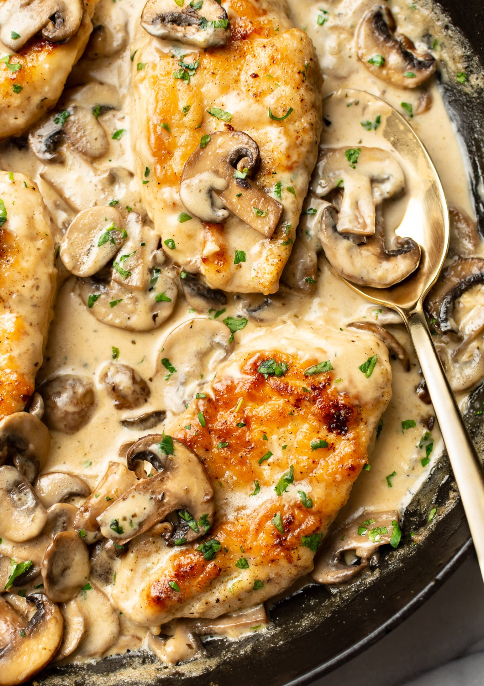

Creamy Chicken Mushroom

Description
This creamy mushroom chicken recipe has the most deliciously tender pan-fried chicken smothered in a garlicky mushroom sauce! It's quick and easy and can be on your table in half an hour.
Juicy mushrooms and chicken just go together so well, and pairing them with a garlic cream sauce takes it over the top. Pantry essentials are transformed into a winning dish that's special enough for company, but go ahead and eat it any old weeknight!
Ingredients
- 2 large chicken breasts
- Salt and pepper, to taste
- Flour, for dredging
- 2 tbsps olive oil
- 2 tbsp butter, salted or unsalted
- 12 ounces mushrooms, sliced
- 1/4 tsp italian seasoning
- 3 cloves garlic, minced
- 1/2 cup chicken broth
- 1/2 tsp lemon juice
- 1/2 tsp Dijon mustard
- 1 cup thickened cream
Steps
- Cut your chicken breasts in half lengthwise to make four thinner cutlets. Season them with salt & pepper then coat them in flour.
- Add the oil to a skillet over medium-high heat.
- Once the pan's hot, add the chicken. Cook it for 4-5 minutes/side until golden. Once this step is done, take the chicken out of the pan and set it aside.
- Add the butter to the pan. Let it melt, then add the mushrooms and Italian seasoning. Cook the mushrooms, stirring occasionally, until the water has been released, it cooks off, and they get a nice sear.
- Take the mushrooms out of the pan (ok to put them on the same plate as the chicken).
- Add the garlic, chicken broth, lemon juice, and Dijon mustard to the pan. Give it a good stir until the mustard dissolves, and let it reduce by half (about 3-4 minutes).
- Add the cream to the pan, along with the chicken and mushrooms. Let the chicken cook for another 5 minutes or so until it's cooked through and the sauce has thickened a bit. Season with salt & pepper as needed.